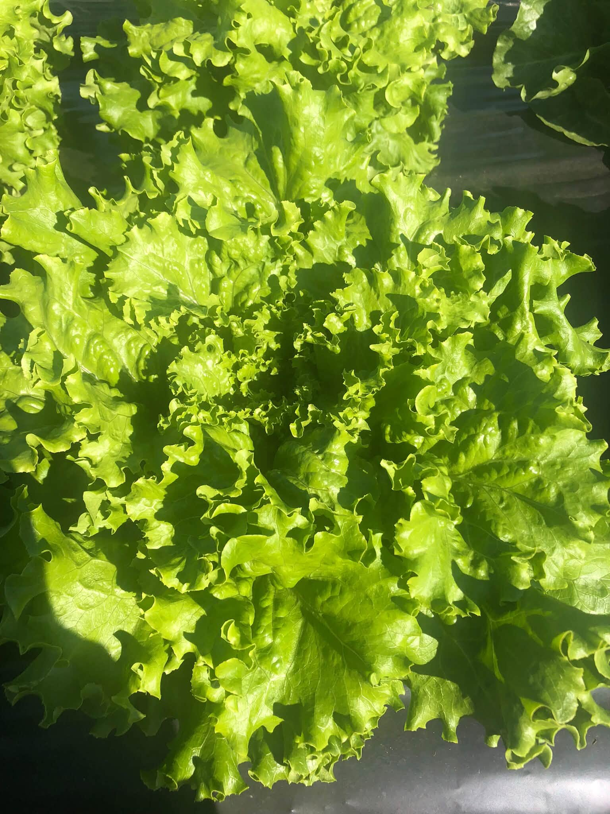

Légumes et fruits
Laitue
Prix sur demande
Deux types de laitue frisée, deux types de petites romaines et une hybride frisée-romaine. Les petites romaines ont plus de goût et de tendreté, avec des nervures plus fines.
La laitue d’automne est la meilleure : avec le froid et le gel, elle produit plus de sucre et devient plus croquante.
Commander sur Messenger(418) 802-6357
Produit disponible au kiosque libre-service, 177, Rang de la Grande-Ligne, selon la saison et les arrivages.